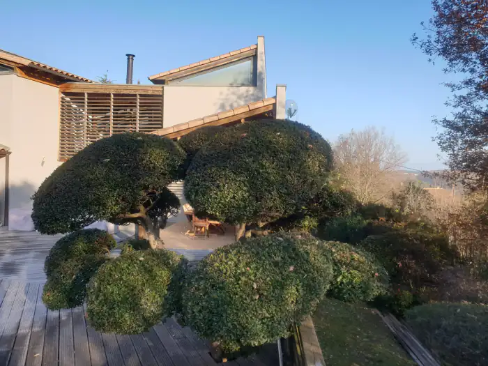

Aménagement minéral
Allées, cours, paillages minéraux, pas japonais en ardoise, béton désactivé, bordures acier.
AccueilTaille & topiaires
Saint-Cyr Services
Haies au cordeau, oliviers en nuage, taille en plateau, fruitiers, palmiers. On repasse sur une forme déjà en place, ou on la refait quand personne n’y a touché depuis des années.
Le métier
La taille d’entretien reprend une forme déjà là. On repasse sur la pousse de l’année, on retend le cordeau, on sort le bois mort. Sur du cyprès ou du laurier, ça se joue à quelques centimètres. On coupe dans le jeune bois, jamais dans le vieux. Une haie rabattue sur du bois nu ne repart pas, et le trou reste des années.
Le rattrapage, c’est un autre chantier. Une haie qui a doublé de largeur et mange l’allée, un fruitier plein de gourmands, un olivier qui n’a pas vu une scie depuis longtemps. On redescend la hauteur et on rouvre le centre. Souvent en deux passages espacés d’une saison, pour ne pas épuiser le sujet d’un coup.
La topiaire, elle, se construit. Pour un nuage : tronc et charpentières dégagés, plateaux de feuillage bien séparés, repousses pincées pour densifier. Pour une boule ou un plateau, on garde le même gabarit d’un passage à l’autre. La forme ne tient d’elle-même qu’au bout de trois ou quatre tailles.

Le détail
Un passage de taille, ou une remise en forme complète. Dans les deux cas, les coupes partent avec nous.
Réalisations
Photos prises sur place. Il y en a une de chantier : une journée de taille, ça ressemble aussi à ça. Cliquez pour agrandir.
Bon à savoir
Ça dépend du sujet. Les persistants, au printemps et en fin d’été, hors gel et hors grosse chaleur : une haie coupée en plein cagnard jaunit sur le feuillage neuf. L’olivier plutôt à la sortie de l’hiver, avant le départ de végétation. Les fruitiers à pépins pendant le repos, ceux à noyau après la récolte. Sur les grandes haies, on allège ou on décale entre mars et juillet, à cause des nids.
Regardez la largeur et le pied. Si la haie déborde sur l’allée et qu’il ne reste qu’une croûte de feuillage sur du bois nu, c’est du rattrapage. Si la forme est encore là et qu’il n’y a que la pousse de l’année à reprendre, c’est de l’entretien. Une photo sur WhatsApp suffit souvent à trancher.
Tout ce qu’on atteint depuis le sol ou depuis une échelle, perche télescopique comprise. Au-delà, on en parle avant. Pareil s’il y a une ligne électrique, une toiture ou une piscine juste en dessous : le matériel change, et ça se décide sur place.
Avec nous. On rassemble au fur et à mesure pour ne pas piétiner le gazon, on charge en remorque, on souffle les allées. Rien ne reste en tas au fond du jardin. Si vous voulez garder du bois de chauffage, dites-le en début de chantier. On met de côté.
Le reste du jardin
La taille se commande seule. Ou avec le reste, sur le même chantier.
Allées, cours, paillages minéraux, pas japonais en ardoise, béton désactivé, bordures acier.
Semé, en plaques ou synthétique. Préparation du sol et arrosage compris.
Massifs méditerranéens, haies persistantes, potagers, et grands sujets posés au camion-grue.
Plages de piscine, terrasses bois et carrelées, écrans de verdure taillés autour du bassin.
Passages réguliers ou remise en état : tonte, taille, débroussaillage, désherbage, ramassage et évacuation.
Le devis et le déplacement sont gratuits. Dites ce que vous avez : on vous dit si c’est faisable, et quand.